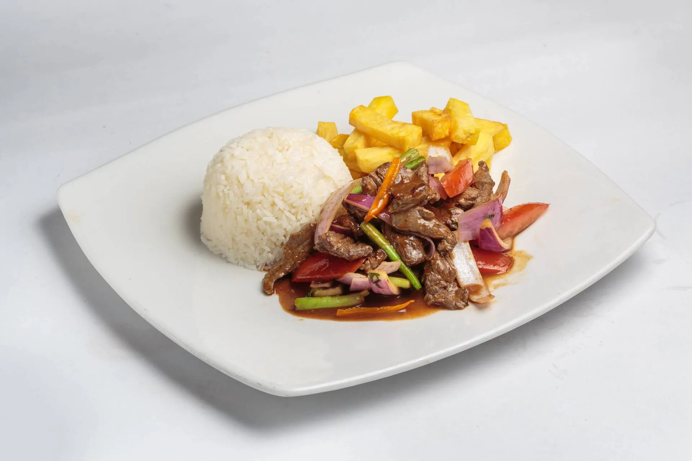

Lomo Saltado

Descripción:
Plato peruano criollo hecho con carne de res salteada con cebolla, tomate, ají amarillo y papas fritas.
Ingredientes:
- 500 g de lomo de res en tiras
- 1 cebolla roja en tiras gruesas
- 2 tomates en gajos
- 1 ají amarillo en tiras (opcional)
- 2 cucharadas de vinagre
- 2 cucharadas de vinagre
- 2 cucharadas de sillao (salsa de soya)
- Papas fritas (a gusto)
- Cilantro picado
- Arroz blanco para acompañar
- Aceite, sal y pimienta
preparaciones:
- En una sartén muy caliente, saltea la carne con un poco de aceite. Retira.
- En la misma sartén, saltea la cebolla, el ají y los tomates por unos minutos.
- Incorpora la carne, agrega sillao, vinagre, sal y pimienta.
- Mezcla y cocina 2-3 minutos más.
- Sirve con papas fritas y arroz blanco, espolvoreando con cilantro.
Volver al Inicio